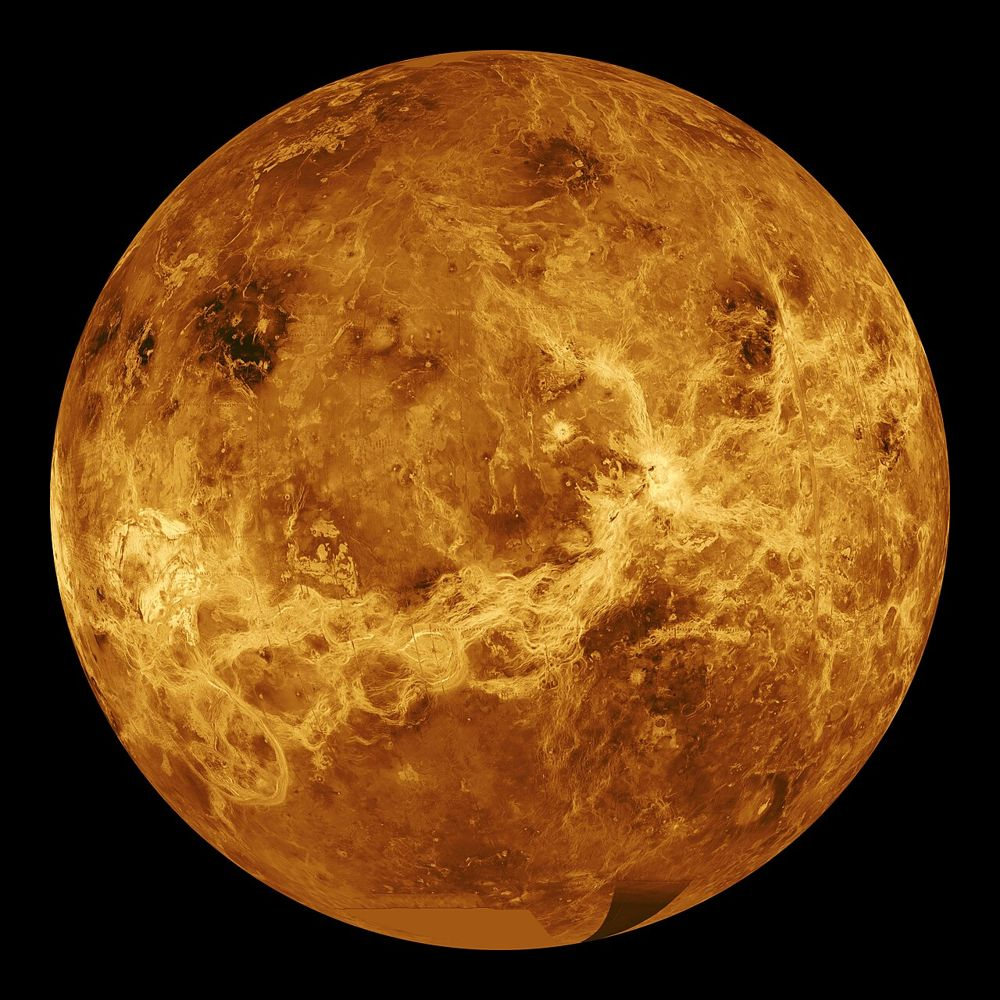
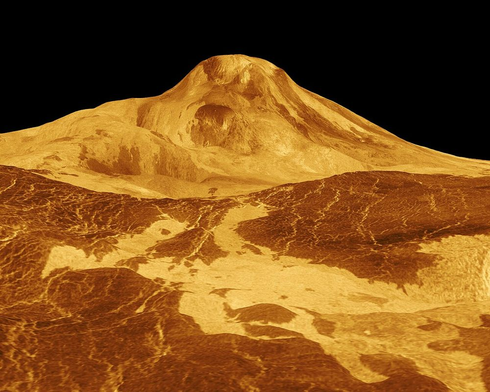

1Gün ve yıl ne demek?
Bir gezegende 'gün', gezegenin kendi ekseni etrafında bir tur dönmesidir. 'Yıl' ise Güneş'in etrafında bir tur atmasıdır. Dünya kendi etrafında yaklaşık 24 saatte döner, Güneş'in etrafını ise yaklaşık 365 günde dolaşır.
Bu yüzden bir Dünya yılı içinde 365 gün vardır. Venüs'te ise durum alışılmışın tam tersidir.

2Venüs'ün yavaş dönüşü
Venüs kendi ekseni etrafında inanılmaz yavaş döner. Bir tam dönüşü yaklaşık 243 Dünya günü sürer. Güneş'in etrafındaki turunu ise yaklaşık 225 Dünya gününde tamamlar.
Yani Venüs, kendi etrafında bir turu bitirmeden Güneş'in etrafındaki turunu tamamlar. Bu anlamda Venüs'te bir gün, bir yıldan uzundur.
İşin bir inceliği daha var: Venüs'te Güneş'in bir doğuşundan bir sonraki doğuşuna kadar geçen süre, gezegenin hem dönüşü hem de yörüngedeki hareketi birleştiği için yaklaşık 117 Dünya günüdür. Yani orada yaşasaydınız, gökyüzünde Güneş'in bir kez doğup batması yaklaşık 4 ay sürerdi.
3Ters yönde dönen gezegen
Güneş sistemindeki gezegenlerin çoğu, kuzey kutbunun üzerinden bakıldığında saat yönünün tersine döner. Venüs ise ters yönde, yani geriye doğru döner. Bu yüzden Venüs'te Güneş batıdan doğar ve doğudan batar.
Bunun nedeni kesin olarak bilinmiyor. Bilim insanları Venüs'ün geçmişte büyük bir gök cismiyle çarpışmış olabileceğini ya da kalın atmosferinin yarattığı gelgit etkilerinin dönüşünü zamanla yavaşlatıp tersine çevirmiş olabileceğini düşünüyor.

4Güneş sisteminin cehennemi
Venüs boyut ve kütle bakımından Dünya'ya çok benzediği için bazen 'Dünya'nın ikizi' denir. Ama yüzeyi bambaşkadır. Venüs Güneş sisteminin en sıcak gezegenidir. Yüzey sıcaklığı yaklaşık 465 °C'dir. Bu kurşunu eritecek kadar sıcaktır. Güneş'e daha yakın olan Merkür bile daha soğuktur.
Bunun sebebi Venüs'ün çok kalın, çoğunlukla karbondioksitten oluşan atmosferidir. Bu atmosfer güneş ısısını hapsederek aşırı güçlü bir sera etkisi yaratır. Yüzeydeki basınç Dünya'dakinin yaklaşık 90 katıdır. Bu, okyanusta yaklaşık 900 metre derinlikteki basınca eşdeğerdir. Gezegen ayrıca sülfürik asit bulutlarıyla kaplıdır.
Bu koşullar yüzünden Venüs yüzeyine inen uzay araçları ancak birkaç saat dayanabildi. Bu yüzden yüzeyin büyük kısmı, bulutları delip geçebilen radar dalgalarıyla haritalandı.
💡 Biliyor muydun?
- Venüs, Güneş ve Ay'dan sonra gökyüzündeki en parlak doğal cisimdir. Bu yüzden 'Çoban Yıldızı' ya da 'Akşam Yıldızı' olarak bilinir.
- Venüs'ün uydusu yoktur.
- Venüs yüzeyine ilk başarılı inişi 1970'te Sovyet Venera 7 aracı yaptı.
✅ Kaynaklar
📷 Görseller
- Kapak: NASA/JPL-Caltech · Public domain · Wikimedia Commons
- Magellan uzay aracının radar verileriyle oluşturulmuş Venüs yüzeyi: NASA/JPL · Public domain · Wikimedia Commons
- Venüs'teki Maat Mons yanardağının radar verisinden üretilmiş üç boyutlu görüntüsü (dikey ölçek abartılmıştır): NASA - Jet Propulsion Laboratory · Public domain · Wikimedia Commons